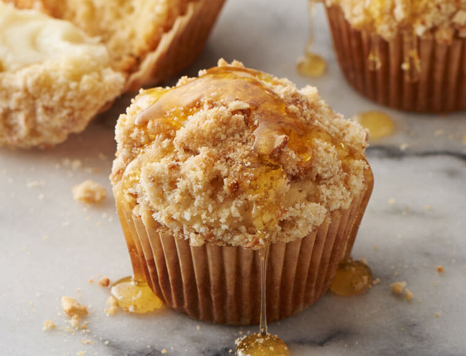
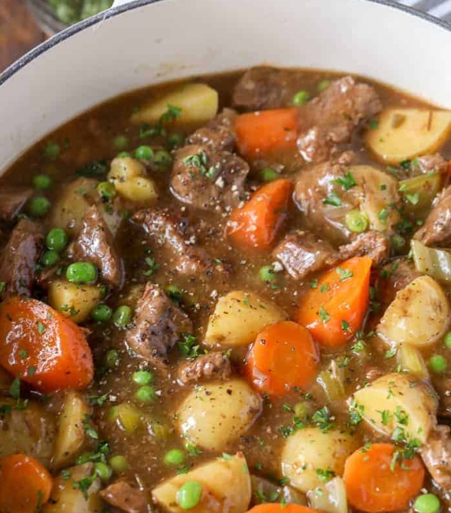

Honey Muffins

Total Time: 30 min ; Makes: 1 dozen
;
Author: Grammy Liz
Ingredients
- 2 cups all-purpose flour
- 1/2 cup sugar
- 3 teaspoons baking powder
- 1/2 teaspoon salt
- 1 large egg, room temperature
- 1 cup 2% milk
- 1/4 cup butter, melted
- 1/4 cup honey
Instructions
- Preheat oven to 400°.
- In a large bowl, combine flour, sugar, baking powder
and salt.
- In a small bowl, combine egg, milk, butter and honey.
- Stir wet ingredients into dry ingredients just until
moistened.
- Fill greased or paper-lined muffin cups three-fourths full.
- Bake 15-18 minutes or until a toothpick inserted in center comes
out clean.
- Cool 5 minutes before removing from pan. Serve warm.
Sugar Cookies

Total Time: 30 min ; Makes: 4 dozen
;
Author: Susie Q
Ingredients
- 2 ¾ cups all-purpose flour
- 1 teaspoon baking soda
- ½ teaspoon baking powder
- 1 cup butter, softened
- 1 ½ cups white sugar
- 1 egg
- 1 teaspoon vanilla extract
Instructions
- Gather all ingredients. Preheat oven to 375°F (190°C).
- Stir flour, baking soda, and baking powder together in a small bowl
- Beat sugar and butter together in a large bowl until smooth.
- Beat in egg and vanilla.
- Gradually blend in flour mixture.
- Roll dough into walnut-sized balls and place 2 inches apart on
ungreased baking sheets.
- Bake 8-10 minutes or until edges are golden.
- Cool briefly on baking sheets, then transfer to a wire rack
to cool completely.
Beef Stew

Total Time: 1 hr 30 min ; Makes:
8 servings
; Author: Holly Nilson
Ingredients
- 2 pounds stewing beef, trimmed and cubed
- 3 tablespoons all-purpose flour
- ½ teaspoon garlic powder
- ½ teaspoon salt
- ½ teaspoon black pepper
- 3 tablespoons olive oil (more as needed)
- 1 onion, chopped
- ½ cup red wine (optional)
- 1 pound potatoes, peeled and cubed
- 4 carrots, cut into 1-inch pieces
- 4 ribs celery, cut into 1-inch pieces
- 1 teaspoon dried rosemary (or 1 fresh sprig)
- 2 tablespoons cornstarch (as needed)
- 2 tablespoons water (as needed)
- ¾ cup peas
Instructions
- Combine flour, garlic powder, salt, and pepper. Toss beef in
flour mixture.
- Heat olive oil in a large pot over medium-high heat. Shake off
excess flour and brown beef in small batches. Remove and set aside.
- Add onions to the pot (add more oil if needed) and cook until
softened, about 3 minutes.
- Add beef broth and red wine, scraping up brown bits from the
bottom
- Stir in browned beef, potatoes, carrots, celery, tomato paste
, and rosemary.
- Reduce heat to medium-low, cover, and simmer 1 hour to
90 minutes,until beef is tender.
- Mix equal parts cornstarch and water to make a slurry.
Add slowly to the boiling stew until desired
thickness is reached.
- Stir in peas and simmer 5-10 minutes. Season with salt and
pepper to taste.